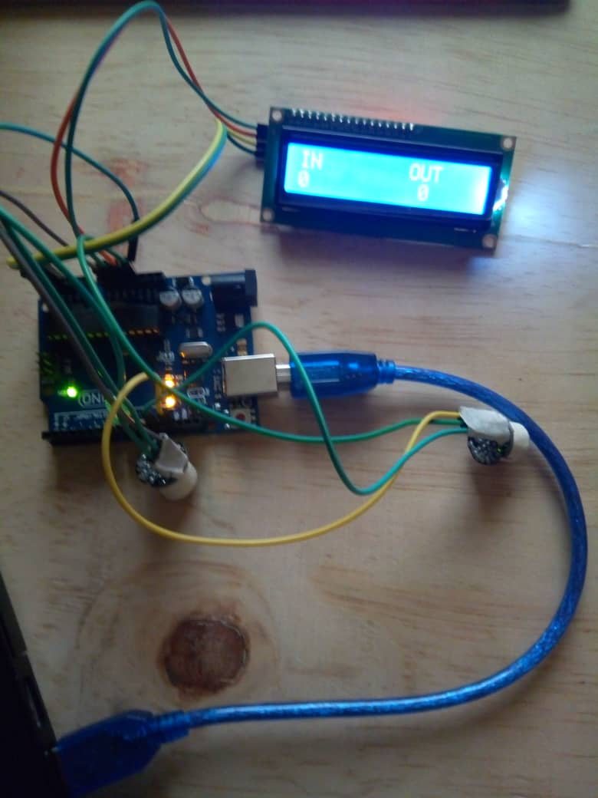

The Bi-directional Counter shall be located at the main entrance of the CIT Block B building. This counter is made up of two PIR motion sensors, a 16X2 LCD,a green LED which lights every time a person passes by the doorway, a 1600mAh battery, an Arduino board and a GSM Module with a 4G simcard to upload the data generated by the system to a Thingspeak account. All these components are joined together using jumper wires of very low resistance. The code for this system is written in arduino.
Mode Of Operation
For an individual to access the building (Makerere university CIT Block B), he has to go through the main entrance.When he/she goes through the door way, the system detects his movement with use of the PIR sensors. The sensors trigger the LCD to increase the number of people in the building by 0ne.
For an indindividual to leave the COCIS building, he still has to go through the same door way. The PIR sensors again detect this movement and trigger the LCD to increment the number of people who have left the building by one. This data is uploaded to a Thingspeak account to be reviewed by the custodian of the building.
At the end of the day (The building is closed at 9:00pm), the number of people who have left the building should be equal to the number that entered. If this is true, the system is switced off and the building is closed, if not, the security officer on duty searches the building to look for the remaining people and tell them to vacate the building. At the beginning of the next day, the system is powered on by the security guard before opening the building.
Importance Of The System
- A bi-directional counter is very essential in establishing security at buildings as large as The CIT building. It is extremely hard to know that all the people have exited the building before its closure. In fact, a couple of times, students have always been locked inside the building and they end up having to look for the security guard to open for them.
what if the person locked inside the building was a criminal, the resources at the building would be in danger of being stolen or vandalised after the building has been closed. - The counter generates statistical figures which can be used to make plans for the population at the building. These plans include providing services (like wi-fi spots, data sockets, power sockets, etc)
Planning is easier and more accurate once one knows the number of people he/she is planninmg for.